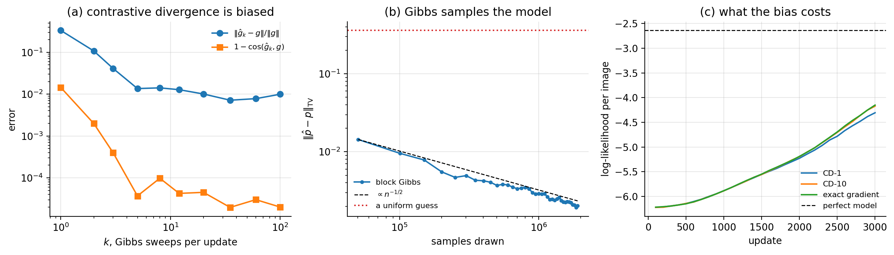
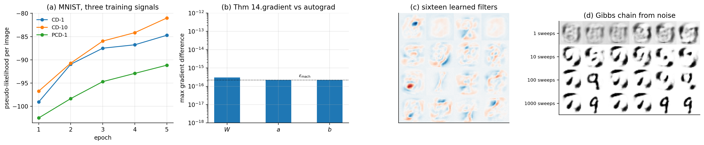

14. Chapter 14: Boltzmann Machines#
Every model so far has been discriminative. Given an input we predicted an output: a number, a class, a solution to a differential equation, a reconstruction. Even the autoencoder of Chapter 12, which had no labels, was scored on how well it reproduced a given input.
A generative model asks a different question. Rather than \(p(y\mid\bm{x})\) it models \(p(\bm{x})\) itself: not what to predict from an observation, but what observations are likely at all. With such a model in hand one can sample new data, evaluate how surprising an observation is, fill in missing components, and – most valuable in the physical sciences – inspect the structure the model has inferred.
The Boltzmann machine is the oldest such model in this book and the one closest to physics, because it is physics: the distribution it fits is the canonical ensemble, its parameters are couplings and fields, and the difficulty of training it is the difficulty of computing a partition function. That difficulty is genuine and is the organising theme of the chapter. We derive it, prove exactly where it enters, and then spend the rest of the chapter on the Markov chain Monte Carlo machinery invented to get around it.
The material follows the lecture notes for weeks eleven and twelve of FYS-STK3155/4155 and the accompanying notes on Gibbs sampling.
14.1. Energy models#
Let \(\bm{x}\in\mathcal{X}\) be a configuration of the variables we observe – the visible units – and let \(\bm{h}\in\mathcal{H}\) be a configuration of variables we do not observe, the hidden units. An energy-based model assigns every joint configuration an energy \(E(\bm{x},\bm{h};\bm{\Theta})\) and declares the probability to be the Boltzmann weight of that energy,
normalised by the partition function
The parameters \(\bm{\Theta}\) are what we fit. Anything non-negative can be written as \(e^{-E}\), so Eq. (14.1) is not a restriction on the family of distributions; it is a change of variables that makes the structure convenient, and it is the same change of variables a physicist makes when writing \(p\propto e^{-\beta H}\).
Two remarks on notation. A symbol like \(\bm{x}\) now denotes an entire configuration, not a single variable, and the sums in Eq. (14.2) run over all configurations. And the temperature has been absorbed into \(E\); setting \(\beta=1\) costs nothing because \(\bm{\Theta}\) can rescale.
Since the hidden units are not observed, what we can compare against data is the marginal
and it is convenient to name the exponent of the marginal.
Definition 14.1 (Free energy)
The free energy of a visible configuration is
The name is the physicist’s: \(F\) is the free energy of the hidden subsystem at fixed visible configuration, and the sum over \(\bm{h}\) is a partial trace. For the restricted machines of Section The restriction that sum can be done in closed form, which is the whole reason they are used.
14.1.1. The counting problem#
Equation (14.2) is a sum over every configuration. If there are \(M\) binary visible units and \(N\) binary hidden units it has \(2^{M}\times2^{N}\) terms. For a machine with \(M=784\) visible units, one per pixel of an MNIST image, and \(N=500\) hidden units, that is \(2^{1284}\approx10^{386}\) terms – more than the number of atoms in the observable universe raised to a considerable power. The partition function is not merely expensive; it is permanently out of reach.
This is not a defect of the model. It is the same intractability that makes statistical mechanics hard, and the same one that made the Ising model resist solution in three dimensions. Everything technical in this chapter is a response to it.
14.2. Maximum likelihood and the two phases#
Given data \(\bm{X}=\{\bm{x}^{(1)},\dots,\bm{x}^{(n)}\}\) assumed independent, the likelihood is \(\prod_v p(\bm{x}^{(v)};\bm{\Theta})\), and as always we work with its logarithm,
The two terms behave very differently, and the following theorem says exactly how.
Theorem 14.2 (The gradient is a difference of two expectations)
For the model (14.1),
where \(\langle\cdot\rangle_{\mathrm{data}}\) averages over \(\bm{x}\sim\mathrm{data}\) and \(\bm{h}\sim p(\bm{h}\mid\bm{x})\), and \(\langle\cdot\rangle_{\mathrm{model}}\) averages over the joint model distribution \(p(\bm{x},\bm{h};\bm{\Theta})\).
Proof
Take the second term of Eq. (14.5) first. Since \(\nabla\log Z=\nabla Z/Z\) and \(Z=\sum_{\bm{x},\bm{h}}e^{-E}\),
recognising \(e^{-E}/Z\) as \(p(\bm{x},\bm{h})\). For the first term, by Definition 14.1,
since \(e^{-E(\bm{x},\bm{h})}/\sum_{\bm{h}'}e^{-E(\bm{x},\bm{h}')} =p(\bm{h}\mid\bm{x})\). Averaging over the data and subtracting \(\nabla\log Z\) gives Eq. (14.6).
Equation (14.6) is the central formula of the chapter and it has a vivid reading. The positive phase lowers the energy of configurations the data actually contain; the negative phase raises the energy of configurations the model currently believes in. Learning is a competition between the two, and it stops exactly when the model’s expectations match the data’s – which is the classical method-of-moments condition of Chapter 2, arrived at from a different direction.
Where the difficulty lives
The positive phase is an average over the training set and costs nothing. The negative phase is an average over the model distribution, which is \(e^{-E}/Z\), and drawing samples from it is exactly the problem that \(Z\) makes hard. Every technique in the rest of this chapter – Markov chains, Metropolis, Gibbs, contrastive divergence – exists to estimate that one expectation. Note also what is not needed: nowhere does Eq. (14.6) require the value of \(Z\), only samples from the distribution it normalises. That is the loophole the whole subject exploits.
14.2.1. The same statement as a divergence#
There is an equivalent formulation worth having. For distributions \(p\) and \(q\) the Kullback-Leibler divergence is
with equality if and only if \(p=q\), by Jensen’s inequality applied to the convex function \(-\log\). Writing \(p_{\mathrm{data}}\) for the empirical distribution,
and since the entropy \(H(p_{\mathrm{data}})\) does not depend on \(\bm{\Theta}\), maximising the likelihood is minimising the KL divergence from the data to the model. The two views are the same computation; the divergence view makes the target explicit and will reappear when variational methods are introduced.
14.3. Markov chain Monte Carlo#
We need samples from \(p(\bm{x})\propto e^{-F(\bm{x})}\) without knowing the constant. The device is to construct a Markov chain whose long-run distribution is the one we want, run it, and use its states as samples.
A Markov chain on a finite state space is a sequence \(\bm{s}^{(0)}, \bm{s}^{(1)},\dots\) in which the next state depends only on the current one,
with \(T\) the transition matrix, \(T(\bm{x}\to\bm{y})\ge0\) and \(\sum_{\bm{y}}T(\bm{x}\to\bm{y})=1\). A distribution \(\pi\) is stationary for \(T\) if it reproduces itself,
Two properties make a chain useful. It is irreducible if every state can be reached from every other, and aperiodic if it does not return to states only at multiples of some period; together these are what is usually called ergodicity, and the standard theorem then says that the chain has a unique stationary distribution and converges to it from any start. What remains is to arrange for \(\pi\) to be the distribution we want, and the following condition is the standard tool.
Definition 14.3 (Detailed balance)
A transition matrix \(T\) satisfies detailed balance with respect to \(\pi\) if
Proposition 14.4 (Detailed balance implies stationarity)
If \(T\) satisfies Eq. (14.11) then \(\pi\) is stationary for \(T\). The converse is false.
Proof
Summing Eq. (14.11) over \(\bm{x}\),
using that the rows of \(T\) sum to one. This is Eq. (14.10). For the converse, a deterministic cycle on three states has a uniform stationary distribution but no reverse transitions at all, so Eq. (14.11) fails.
Detailed balance is a physical statement: in equilibrium the flow of probability from \(\bm{x}\) to \(\bm{y}\) exactly cancels the flow back. It is stronger than stationarity but far easier to check, and every algorithm below is designed around it.
14.3.1. Metropolis-Hastings#
Propose a move from \(\bm{x}\) to \(\bm{y}\) with some proposal density \(q(\bm{x}\to\bm{y})\), and accept it with probability
If rejected, the chain stays where it is.
Proposition 14.5
The chain defined by Eq. (14.12) satisfies detailed balance with respect to \(\pi\), and requires \(\pi\) only through ratios \(\pi(\bm{y})/\pi(\bm{x})\).
Proof
The full transition for \(\bm{y}\neq\bm{x}\) is \(T=qA\). Suppose without loss of generality that the ratio in Eq. (14.12) is at most one, so \(A(\bm{x}\to\bm{y})=\pi(\bm{y})q(\bm{y}\to\bm{x})/ [\pi(\bm{x})q(\bm{x}\to\bm{y})]\) and \(A(\bm{y}\to\bm{x})=1\). Then
which is Eq. (14.11). The case \(\bm{x}=\bm{y}\) is trivial. The ratio statement is immediate: \(\pi\) enters only as \(\pi(\bm{y})/\pi(\bm{x}) =e^{-[F(\bm{y})-F(\bm{x})]}\), in which \(Z\) cancels.
That cancellation is the point. Proposition 14.5 is what makes sampling from \(e^{-F}/Z\) possible without ever computing \(Z\), and it is the loophole promised in the notebox of Section Maximum likelihood and the two phases.
14.3.2. Gibbs sampling#
Gibbs sampling replaces the proposal-and-accept step by a sequence of exact conditional draws. With the state split into components \(\bm{s}=(s_1,\dots,s_d)\), one sweep visits each component and replaces it by a draw from its conditional given all the others,
Proposition 14.6 (Gibbs is Metropolis with acceptance one)
The update (14.13) satisfies detailed balance with respect to \(\pi\), and is the special case of Eq. (14.12) in which the proposal is the exact conditional and every proposal is accepted.
Proof
Write \(\bm{s}_{-i}\) for the components other than \(i\), and take \(q(\bm{x}\to\bm{y})=\pi(y_i\mid\bm{x}_{-i})\) for \(\bm{y}\) differing from \(\bm{x}\) only in component \(i\). Then, using \(\pi(\bm{x})=\pi(x_i\mid\bm{x}_{-i})\pi(\bm{x}_{-i})\) and \(\bm{x}_{-i}=\bm{y}_{-i}\),
so the acceptance probability of Eq. (14.12) is \(\min\{1,1\}=1\) and detailed balance holds by Proposition 14.5.
So Gibbs sampling never rejects, which is its great practical advantage – no tuning of a step size, no wasted proposals. Its cost is that it needs the conditionals in closed form and it moves one component at a time, so strongly correlated components make it mix slowly. Metropolis, by contrast, works with any proposal but throws work away. Which is better depends entirely on whether the conditionals are available, and for the restricted machines of the next section they are available and are trivially cheap.
14.4. Boltzmann machines#
A Boltzmann machine is the energy model (14.1) with a quadratic energy on binary units. Writing \(\bm{s}=(\bm{x},\bm{h})\) for all units together,
which any physicist will recognise as an Ising model with fields \(c_i\) and couplings \(J_{ij}\), and which any statistician will recognise as a pairwise undirected graphical model. The visible units are clamped to data during the positive phase; the hidden units are never observed and exist to let the marginal \(p(\bm{x})\) be richer than the pairwise form would otherwise allow.
The general machine of Eq. (14.14) is essentially untrainable. Every unit couples to every other, so no conditional factorises, Gibbs sampling must be done one unit at a time, and both phases of Eq. (14.6) require Monte Carlo – the positive phase too, because with visible-visible and hidden-hidden couplings even \(p(\bm{h}\mid\bm{x})\) is intractable. Two nested approximations, each noisy, compound into an algorithm that in practice does not converge.
14.4.1. The restriction#
The remedy is to forbid connections within a layer. A restricted Boltzmann machine keeps only visible-hidden couplings, so its graph is bipartite:
with visible biases \(\bm{a}\in\mathbb{R}^{M}\), hidden biases \(\bm{b}\in\mathbb{R}^{N}\) and weights \(\bm{W}\in\mathbb{R}^{M\times N}\). This single deletion changes everything, and the following theorem says why.
Theorem 14.7 (Conditional independence)
For the restricted machine (14.15) with binary units in \(\{0,1\}\), the conditionals factorise completely,
with logistic on-probabilities
where \(\sigma(z)=1/(1+e^{-z})\). Furthermore the free energy of Definition 14.1 is available in closed form,
Proof
Sum the joint weight over the hidden configurations. Because Eq. (14.15) contains no \(h_jh_{j'}\) term, the exponent is a sum of terms each involving a single \(h_j\), so the exponential factorises and the sum over \(\bm{h}\in\{0,1\}^{N}\) becomes a product of independent sums:
Taking \(-\log\) gives Eq. (14.18). Dividing the joint by this marginal, the factor \(e^{\bm{a}^{\mathsf{T}}\bm{x}}\) cancels and
which is Eq. (14.16); setting \(h_j=1\) and dividing numerator and denominator by \(e^{b_j+\bm{x}^{\mathsf{T}}\bm{w}_{\ast j}}\) gives the logistic form. The visible case is identical by the symmetry of Eq. (14.15) under \(\bm{x}\leftrightarrow\bm{h}\), \(\bm{a}\leftrightarrow\bm{b}\), \(\bm{W}\leftrightarrow\bm{W}^{\mathsf{T}}\).
Theorem 14.7 is what makes restricted machines usable, and it buys three things at once. The positive phase of Eq. (14.6) becomes exact, since \(p(\bm{h}\mid\bm{x})\) is known in closed form and no sampling is needed. Gibbs sampling can update an entire layer at once – block Gibbs –
because within a layer the units are independent given the other layer, so \(M+N\) scalar updates collapse into two vector operations. And the free energy (14.18) is computable, so unnormalised probabilities can be compared even though \(Z\) cannot.
Note also what Eq. (14.17) says about the arithmetic: it is \(\sigma(\bm{W}^{\mathsf{T}}\bm{x}+\bm{b})\), which is precisely the forward pass of a single logistic layer from Chapter 5. An RBM is a neural-network layer read as a probability model, with the same weights used in both directions.
Specialising Eq. (14.6) to Eq. (14.15), where \(\partial E/\partial w_{ij}=-x_ih_j\), gives the form actually implemented:
and similarly for \(b_j\). Every term is a correlation between a visible and a hidden unit: learning matches the model’s correlations to the data’s.
14.4.2. Gaussian-binary machines#
Binary visible units are wrong for continuous data. The Gaussian-binary machine replaces them by real variables with a quadratic term,
which leaves the hidden conditional unchanged in form, \(p(h_j=1\mid\bm{x})=\sigma(b_j+\sum_i x_iw_{ij}/\sigma_i^{2})\), and makes the visible conditional a Gaussian,
Block Gibbs works exactly as before, one layer at a time. The variances \(\sigma_i^{2}\) are usually fixed to one after standardising the data, because learning them jointly with \(\bm{W}\) is notoriously unstable – the energy can be driven down by shrinking \(\sigma_i\) without improving the fit.
14.5. Contrastive divergence#
Theorem 14.2 left one term requiring samples from the model. The honest procedure is to run the chain (14.19) to equilibrium from any start, which takes an unknown and possibly enormous number of sweeps. Contrastive divergence does something cheaper and admits it: start the chain at the data and run it for \(k\) sweeps only, usually \(k=1\).
The reasoning is that the data are, if the model is any good, already close to the model distribution, so a short chain moves in the direction the model is wrong and that direction is what the gradient needs.
This is an approximation of a particular and awkward kind.
CD-\(k\) is biased, not merely noisy
A noisy estimator has the right expectation and averages out over updates; a biased one does not. CD-\(k\) is biased for every finite \(k\), and it is not the gradient of any function – there is no “contrastive divergence objective” that it descends. What can be said is that the bias vanishes as \(k\to\infty\) and that in practice it points close enough to the truth for gradient ascent to work. Section How biased is CD-\texorpdfstring{\(k\)}{k}? measures both halves of that claim.
The notebox says the bias vanishes as \(k\to\infty\). That is worth converting into a statement about how fast, because it is the statement that decides whether \(k=1\) is defensible.
Proposition 14.8 (The CD-\(k\) bias is the mixing of the chain)
Write \(\bm{s}(\bm{x})=-\nabla_{\bm{\Theta}}F(\bm{x})\) for the statistic whose expectation forms each phase of Eq. (14.6), let \(p_k\) be the distribution of the chain after \(k\) sweeps started at the data and \(p_\infty\) the model distribution. Then the bias of CD-\(k\) obeys
where \(\mathrm{TV}\) is the total-variation distance. If the chain is geometrically ergodic with rate \(\rho<1\), so that \(\mathrm{TV}(p_k,p_\infty)\le C\rho^{k}\), the bias decays geometrically in \(k\).
Proof
The positive phase of Eq. (14.23) is the same in both estimators, so the whole difference is in the negative phase, which is \(\mathbb{E}_{p_k}[\bm{s}]\) for CD-\(k\) and \(\mathbb{E}_{p_\infty}[\bm{s}]\) for the exact gradient. For any bounded \(f\), \(|\mathbb{E}_p f-\mathbb{E}_q f|\le2\|f\|_\infty\mathrm{TV}(p,q)\) by the variational characterisation of total variation, applied coordinatewise. The last statement is the definition of geometric ergodicity substituted into the bound.
Two things follow. The bias is not a property of contrastive divergence as such but of how quickly the Gibbs chain forgets where it started, so anything that speeds up mixing reduces it – which is the argument for Section How biased is CD-\texorpdfstring{\(k\)}{k}? measuring the mixing directly, and the reason a machine with large weights, whose chain mixes slowly, is the hard case. And because the bound is geometric rather than \(\bigO(1/\sqrt{k})\), a handful of sweeps should buy most of what is available; Section How biased is CD-\texorpdfstring{\(k\)}{k}? finds the error falling from \(0.33\) at \(k=1\) to under \(0.01\) by \(k=5\), which is what Eq. (14.24) predicts.
A cheap improvement is persistent contrastive divergence, which keeps the Gibbs chain running across parameter updates instead of restarting it at the data each time. Since the parameters move slowly, the chain stays near equilibrium and the bias falls, at no extra cost per update. In terms of Eq. (14.24), persistent CD replaces \(p_k\) – the data smeared by \(k\) sweeps – by the state of a chain that has been running for the whole of training, so \(\mathrm{TV}(p_k,p_\infty)\) is small for a different and usually better reason. Section On real data: CD-1, CD-10 and persistent CD measures whether the promise is kept on real data, and the answer is not a simple yes.
14.6. Implementation and verification#
Everything in Sections The restriction and Contrastive divergence is a few lines, and small machines let us check them against exact answers – because for \(M\) up to about twenty, \(Z\) can be enumerated. That is the strategy of this section: use brute force where it is available to audit the approximations we are forced to use elsewhere.
def free_energy(P, X):
"""F(x) = -a.x - sum_j log(1 + exp(b_j + (x^T W)_j)), Eq. (14.freeenergy).
The hidden units have been summed out exactly, which is what the
restriction to a bipartite graph buys.
"""
z = X @ P["W"] + P["b"]
return -(X @ P["a"]) - np.sum(np.logaddexp(0.0, z), axis=-1)
def p_h_given_x(P, X):
return sigmoid(X @ P["W"] + P["b"])
def p_x_given_h(P, H):
return sigmoid(H @ P["W"].T + P["a"])
def gibbs_step(P, X, rng):
"""One sweep of block Gibbs: sample all h, then all x, Eq. (14.blockgibbs)."""
ph = p_h_given_x(P, X)
H = (rng.random(ph.shape) < ph).astype(float)
px = p_x_given_h(P, H)
Xn = (rng.random(px.shape) < px).astype(float)
return Xn, H, ph, px
The exact gradient enumerates the \(2^{M}\) visible states and weights them by the true model probability; the CD-\(k\) gradient replaces that sum by a short chain.
def exact_gradient(P, X):
"""The true gradient of the log-likelihood, Eq. (14.gradient).
The negative phase is computed by enumerating all 2^M visible states and
weighting by the exact model distribution. Only feasible for small M, and
that is exactly why it is useful: it is the ground truth against which
contrastive divergence can be judged.
"""
pos = positive_phase(P, X)
V = all_states(len(P["a"]))
logp = -free_energy(P, V)
logp = logp - np.logaddexp.reduce(logp)
w = np.exp(logp) # exact p(v)
ph = p_h_given_x(P, V)
neg = {"W": (V * w[:, None]).T @ ph, "a": w @ V, "b": w @ ph}
return {k: pos[k] - neg[k] for k in pos}
The gradient formula. Theorem 14.2 is an identity and can be checked as one, by comparing \verb!exact_gradient! against central differences of the exactly computed log-likelihood:
--- exact gradient vs finite differences of the log-likelihood ---
W: max relative error over all 24 entries = 2.61e-08
a: max relative error over all 6 entries = 6.98e-09
b: max relative error over all 4 entries = 1.46e-08
The sampler. Proposition 14.6 says block Gibbs has the model distribution as its stationary distribution. With \(M=6\) we can enumerate all \(64\) visible states, compute \(p(\bm{x})\) exactly, and compare against the empirical frequencies of a long chain in total-variation distance:
=== does block Gibbs sample the model distribution? ===
200 sweeps: total-variation distance to the exact p(v) = 0.0103
2000 sweeps: total-variation distance to the exact p(v) = 0.0034
20000 sweeps: total-variation distance to the exact p(v) = 0.0008
(a uniform guess would give 0.3601)
The distance falls as the square root of the number of samples, which is the Monte Carlo rate of Chapter 2 and is visible as the slope in Figure 14.1(b).
14.6.1. How biased is CD-\texorpdfstring{\(k\)}{k}?#
Now the question the notebox raised. We take a machine small enough for the exact gradient, average the CD-\(k\) estimate over sixty independent chains so that sampling noise is negligible, and compare.
=== CD-k is a BIASED estimator of the gradient ===
k cos(CD-k, exact) ||CD-k - exact|| / ||exact||
1 0.986291 0.3283
2 0.998131 0.1037
5 0.999982 0.0095
10 0.999956 0.0100
25 0.999963 0.0089
100 0.999988 0.0068
The two columns tell different halves of the story and both matter. CD-1 is wrong by thirty-three per cent in magnitude – a bias no amount of averaging removes, since every one of the sixty chains carries it. But its cosine with the true gradient is \(0.986\), an angle of about nine degrees. It points very nearly the right way and is merely the wrong length.
That is exactly why CD-1 works. Gradient ascent does not need the gradient; it needs a direction with positive inner product with the gradient, and a step size it can tune anyway. A systematically short vector at nine degrees to the truth is a perfectly serviceable ascent direction. By \(k=5\) the error is under one per cent and the remaining discrepancy is the noise floor of our sixty-chain average.
What the bias costs. Bias in the gradient need not mean a worse model, so we measure that too. On bars and stripes – a standard small benchmark whose \(14\) patterns on a \(3\times3\) grid live among \(2^{9}=512\) configurations, so the likelihood is exact – we train identical machines with CD-1, CD-10 and the exact gradient:
bars and stripes 3x3: 14 distinct patterns of 512 possible
log-likelihood of the perfect model: -2.6391 per image
training signal final log-likelihood (3 seeds)
CD-1 -4.3869 (-4.5322 to -4.3061)
CD-10 -4.2605 (-4.4092 to -4.1716)
exact gradient -4.2457 (-4.4597 to -4.1265)
CD-10 and the exact gradient are indistinguishable, \(-4.261\) against \(-4.246\), a gap of \(0.015\) nats that is well inside the seed-to-seed spread. CD-1 is measurably but not catastrophically worse at \(-4.387\), about \(0.14\) nats behind. So the thirty-three per cent gradient bias of CD-1 costs roughly a tenth of a nat of likelihood, and ten Gibbs sweeps buy essentially all of it back. None of the three reaches the perfect \(-2.639\), which is a statement about the capacity of eight hidden units and three thousand updates rather than about the training signal.

Figure 14.1: (a) The bias of contrastive divergence against the number of Gibbs sweeps, measured against the exact gradient of Theorem 14.2 with the sampling noise averaged away. The relative error falls from \(0.33\) at \(k=1\) to under \(0.01\) by \(k=5\), while the direction is already almost right at \(k=1\). (b) Total-variation distance between the empirical distribution of a block-Gibbs chain and the exact model distribution, against the number of samples drawn; the dashed line is the \(n^{-1/2}\) Monte Carlo rate and the dotted line is what a uniform guess would give. (c) Log-likelihood during training on bars and stripes for the three training signals, with the likelihood of a perfect model marked.
14.7. Implementations in the libraries#
Neither PyTorch nor TensorFlow ships a Boltzmann machine, which is itself informative: the architecture predates automatic differentiation and its gradient, Eq. (14.20), is not obtained by backpropagation through a loss. It is a difference of two expectations, and one of them comes from a sampler. That makes this section a slightly different exercise from the corresponding sections of Chapters 10 to 13: what is being checked against the libraries is not a layer but a theorem. What the libraries provide is the tensor arithmetic and the optimisers, and the RBM is written on top.
import torch
import torch.nn as nn
class RBM(nn.Module):
"""Binary-binary RBM, Eq. (14.energyBB). Note there is no forward()
returning a loss: the gradient is Eq. (14.rbmgradient), assigned by hand."""
def __init__(self, M=784, N=256, k=1):
super().__init__()
self.W = nn.Parameter(torch.randn(M, N) * 0.01)
self.a = nn.Parameter(torch.zeros(M))
self.b = nn.Parameter(torch.zeros(N))
self.k = k
def free_energy(self, x): # Eq. (14.freeBB)
return -(x @ self.a) - torch.nn.functional.softplus(
x @ self.W + self.b).sum(1)
def gibbs(self, x): # Eq. (14.blockgibbs)
ph = torch.sigmoid(x @ self.W + self.b)
h = torch.bernoulli(ph)
px = torch.sigmoid(h @ self.W.t() + self.a)
return torch.bernoulli(px)
def cd_loss(self, x):
"""A surrogate whose gradient equals Eq. (14.cdk).
The negative sample is detached so that no gradient flows through the
sampler: the chain supplies configurations, not a differentiable path.
"""
v = x
for _ in range(self.k):
v = self.gibbs(v)
return self.free_energy(x).mean() - self.free_energy(v.detach()).mean()
model = RBM(784, 256, k=1)
opt = torch.optim.SGD(model.parameters(), lr=0.01)
for epoch in range(20):
for xb, _ in train_loader:
xb = torch.bernoulli(xb.view(-1, 784)) # binarise the pixels
loss = model.cd_loss(xb)
opt.zero_grad(set_to_none=True)
loss.backward()
opt.step()
The trick in \verb!cd_loss! is worth understanding rather than copying. The difference of free energies is not the log-likelihood – that would need \(Z\) – but its gradient is exactly Eq. (14.23), because \(\nabla F\) at the data gives the positive phase and \(\nabla F\) at the samples gives the estimated negative phase. The \verb!detach()! is essential: without it, autograd would try to differentiate through the Bernoulli draws, which is both meaningless and wrong.
The same in TensorFlow, where the two phases are written out explicitly rather than routed through a surrogate loss:
import tensorflow as tf
class RBM(tf.Module):
def __init__(self, M=784, N=256, k=1):
self.W = tf.Variable(tf.random.normal([M, N], stddev=0.01))
self.a = tf.Variable(tf.zeros([M]))
self.b = tf.Variable(tf.zeros([N]))
self.k = k
def sample(self, p):
return tf.cast(tf.random.uniform(tf.shape(p)) < p, tf.float32)
def gibbs(self, x):
h = self.sample(tf.sigmoid(x @ self.W + self.b))
return self.sample(tf.sigmoid(h @ tf.transpose(self.W) + self.a))
@tf.function
def cd_update(self, x, lr=0.01):
"""Eq. (14.rbmgradient) with the negative phase from k Gibbs sweeps."""
ph_data = tf.sigmoid(x @ self.W + self.b)
v = x
for _ in range(self.k):
v = self.gibbs(v)
ph_model = tf.sigmoid(v @ self.W + self.b)
n = tf.cast(tf.shape(x)[0], tf.float32)
self.W.assign_add(lr * (tf.transpose(x) @ ph_data
- tf.transpose(v) @ ph_model) / n)
self.a.assign_add(lr * tf.reduce_mean(x - v, axis=0))
self.b.assign_add(lr * tf.reduce_mean(ph_data - ph_model, axis=0))
14.7.1. Do the implementations agree, and is the theorem right?#
The three implementations should compute the same free energy, the same conditionals and the same contrastive-divergence step. Pushing one set of weights into all of them, with the Gibbs samples shared so that the comparison is of arithmetic and not of two random number generators:
=== 1. free energy and conditionals, identical weights ===
F(x), Eq. (14.freeenergy) max |ours - torch| : 8.882e-16
F(x), Eq. (14.freeenergy) max |ours - keras| : 8.882e-16
p(h|x), Eq. (14.condh) max |ours - torch| : 1.110e-16
p(h|x), Eq. (14.condh) max |ours - keras| : 1.110e-16
log Z by enumeration (512 states) : 9.806863470178
mean log-likelihood, Eq. (14.loglik) : -6.425359835072
=== 3. one CD-1 gradient with the same Gibbs samples ===
parameter |ours - torch| |ours - keras|
W 5.551e-17 1.110e-16
a 0.000e+00 0.000e+00
b 2.220e-16 2.220e-16
There is a third implementation to hand. \verb!sklearn.neural_network.!
\verb!BernoulliRBM! is written by other people for other reasons, and stores its weight matrix transposed, as \((N,M)\) rather than our \((M,N)\). With that one convention undone:
=== 4. scikit-learn's BernoulliRBM on the same weights ===
p(h|x) max |ours - sklearn| : 1.110e-16
F(x) max |ours - sklearn| : 0.000e+00
Now the check that is worth more than all of those. Theorem 14.2 asserts that the gradient of the log-likelihood splits into a positive and a negative phase, Eq. (14.6). For a machine small enough to enumerate, that assertion is testable directly, because \(\log p(\bm{x})=-F(\bm{x})-\log Z\) is then an ordinary differentiable function of the parameters: \(F\) by Eq. (14.4) and \(\log Z\) by a \verb!logsumexp! over all \(2^{M}\) visible states. Handing that expression to PyTorch and calling \verb!.backward()! computes the gradient with no notion of a phase, of a sampler, or of a Boltzmann machine at all.
=== 2. Theorem 14.gradient checked against autograd ===
parameter shape |autograd - Eq. (14.gradient)| scale
W (9, 5) 3.053e-16 2.208e-01
a (9,) 2.220e-16 3.141e-01
b (5,) 2.220e-16 6.851e-02
our log-likelihood : -6.425359835072
torch's : -6.425359835072
worst disagreement : 3.053e-16
The two-phase decomposition is not an approximation, a convention or a heuristic. It is the derivative of the log-likelihood, and automatic differentiation rediscovers it without being told. What automatic differentiation cannot do is the thing that makes the architecture hard: the \(\log Z\) above required enumerating five hundred and twelve states, and at \(M=784\) there are \(2^{784}\) of them. Everything difficult about training a Boltzmann machine is in that one term, and it is why the chapter needs Markov chains at all.
14.7.2. On real data: CD-1, CD-10 and persistent CD#
Section How biased is CD-\texorpdfstring{\(k\)}{k}? measured the bias exactly, on nine visible units. The question that leaves open is whether it matters at a scale where the exact answer is unavailable. We train a machine with \(M=784\) and \(N=128\) on binarised MNIST for five epochs with each of the three training signals. The likelihood is out of reach, so we report the pseudo-likelihood
where \(\tilde{\bm{x}}^{(i)}\) is \(\bm{x}\) with pixel \(i\) flipped. The partition function cancels between the two free energies, which is the whole point: it is computable exactly where Eq. (14.5) is not.
\noalign{} |
\multicolumn{2}{c}{PyTorch} |
\multicolumn{2}{c}{TensorFlow} |
||
|---|---|---|---|---|
Signal |
\(\log\mathrm{PL}\) |
s/epoch |
\(\log\mathrm{PL}\) |
s/epoch |
\noalign{}\noalign{} CD-1 |
\(-84.71\) |
\(1\) |
\(-93.20\) |
\(9\) |
CD-10 |
\(\mathbf{-81.00}\) |
\(8\) |
\(-96.15\) |
\(44\) |
PCD-1 |
\(-91.14\) |
\(1\) |
\(-101.64\) |
\(8\) |
\noalign{} |
Table 14.1: A restricted Boltzmann machine on binarised MNIST, \(M=784\), \(N=128\), five epochs of stochastic gradient ascent with learning rate \(0.05\) and momentum \(0.5\). Pseudo-likelihood, Eq. (14.25), is per image on \(2000\) held-out digits; larger is better. The reconstruction error is the mean squared difference between a digit and its one-step mean-field reconstruction.
Three readings, and the third is the interesting one.
CD-10 beats CD-1 in PyTorch, \(-81.0\) against \(-84.7\), at eight times the cost per epoch. That is Proposition 14.8 on real data: more sweeps, less bias, better model – and the improvement is real but modest, which is the same conclusion the bars-and-stripes experiment of Section How biased is CD-\texorpdfstring{\(k\)}{k}? reached with an exact likelihood in hand.
Persistent CD is worse than CD-1 here, \(-91.1\) against \(-84.7\), in both frameworks. This is the opposite of what the paragraph introducing it leads one to expect, and we report it rather than dropping the row. The explanation is in Eq. (14.24): persistent CD is a better estimator of the gradient once the chain has equilibrated, and five epochs at learning rate \(0.05\) is not long enough for that. Early in training the parameters move faster than the chain can follow, so the persistent chain samples a model that no longer exists. The standard remedy is a smaller learning rate and many more epochs, which is precisely the regime in which persistent CD is known to win; at five epochs it loses.
The two frameworks disagree by several nats – \(-84.7\) against \(-93.2\) for CD-1 – while Section Do the implementations agree, and is the theorem right? established that they compute the same gradient to \(10^{-16}\). Nothing is wrong. The two draw different Bernoulli samples in the negative phase and shuffle the data differently, and a stochastic gradient with a biased estimator is sensitive to both. The ordering of the three signals is identical in the two columns, and that ordering is the result; the individual numbers are one run each of a stochastic procedure.
Finally, what the machine has learned. Starting a Gibbs chain from uniform noise and running it in the trained model:
=== samples from the trained machine ===
after 1 Gibbs sweeps: mean free energy 182.23
after 10 Gibbs sweeps: mean free energy -277.05
after 100 Gibbs sweeps: mean free energy -360.19
after 1000 Gibbs sweeps: mean free energy -377.84
The free energy of Eq. (14.4) is \(-\log\) of an unnormalised probability, so a chain descending from \(+182\) to \(-378\) over a thousand sweeps is a chain walking from a region the model considers absurd into the region it considers likely. That descent is what Section Markov chain Monte Carlo promised and it is also, read the other way, a picture of how long the negative phase would take if we insisted on doing it honestly. Figure 14.2 shows the samples themselves at those four times, along with the learned filters.

Figure 14.2: (a) Pseudo-likelihood, Eq. (14.25), against epoch for the three training signals of Table 14.1 in PyTorch. (b) The largest disagreement between the exact gradient of Theorem 14.2 and the same gradient obtained by automatic differentiation of \(-F-\log Z\), against the double-precision unit roundoff. (c) Sixteen of the \(128\) learned filters, columns of \(\bm{W}\) reshaped to \(28\times28\): strokes and pen fragments rather than whole digits. (d) A Gibbs chain of Eq. (14.19) started from uniform noise, shown after \(1\), \(10\), \(100\) and \(1000\) sweeps; the mean free energy falls from \(+182\) to \(-378\) along the way.
14.8. Summary and the programs#
A Boltzmann machine models the data distribution itself as a canonical ensemble, Eq. (14.1). Everything follows from one obstruction: the partition function (14.2) is a sum over \(2^{M+N}\) configurations and is permanently unavailable.
Theorem 14.2 locates the damage precisely. The gradient of the log-likelihood is a difference of two expectations – one over the data, which is free, and one over the model, which requires samples. The value of \(Z\) is never needed, only samples from the distribution it normalises, and that loophole is what Metropolis (Proposition 14.5) and Gibbs (Proposition 14.6) exploit, both by way of detailed balance.
Theorem 14.7 is what makes the restricted machine practical. Deleting the within-layer couplings makes both conditionals factorise into logistic units, so the positive phase becomes exact, Gibbs sampling updates a whole layer at a time, and the free energy has the closed form (14.18). An RBM is a logistic layer read as a probability model.
We verified what could be verified exactly. The gradient identity matched finite differences to \(10^{-8}\); block Gibbs converged to the enumerated model distribution at the \(n^{-1/2}\) Monte Carlo rate, reaching a total-variation distance of \(0.0008\) against \(0.36\) for a uniform guess.
The measurement to remember is Section How biased is CD-\texorpdfstring{\(k\)}{k}?. CD-1 is wrong by \(33\%\) in magnitude, a bias that averaging cannot remove, and yet its cosine with the true gradient is \(0.986\) – about nine degrees. It is a short vector pointing almost the right way, which is all gradient ascent requires. On bars and stripes that bias cost \(0.14\) nats of likelihood against the exact gradient, and ten Gibbs sweeps recovered all but \(0.015\) of it. Approximate gradients are acceptable when their direction is right; it is worth knowing which of the two one is relying on. Proposition 14.8 explains the shape of that result: the bias is \(\mathrm{TV}(p_k,p_\infty)\) up to a constant, so it decays geometrically in \(k\) and a handful of sweeps buys most of what is available.
Section Do the implementations agree, and is the theorem right? closes the loop on Theorem 14.2 itself. For a machine small enough to enumerate, \(\log p(\bm{x})=-F(\bm{x}) -\log Z\) is an ordinary differentiable function, and asking PyTorch to differentiate it – with no notion of a positive or a negative phase – returns the two-phase formula to \(3\times10^{-16}\). The decomposition is not a convention; it is what the derivative is. What autograd cannot supply is the \(\log Z\) that made it possible: five hundred and twelve states here, \(2^{784}\) on MNIST, and every difficulty in the chapter lives in that gap.
On MNIST, Table 14.1, CD-10 beat CD-1 by four nats of pseudo-likelihood at eight times the cost, in line with the exact measurement. Persistent CD came last in both frameworks, which is the opposite of the usual advice and is explained by Eq. (14.24): a persistent chain is the better estimator only once it has caught up with the parameters, and five epochs at learning rate \(0.05\) do not allow that. The two frameworks differed by several nats while computing identical gradients, which is worth remembering whenever a single run is offered as evidence about an algorithm.
The programs are in the directory
doc/BookML/BookPrograms/chapter14_boltzmann.
Every listing above appears there as a numbered file, and three modules run start to finish and reproduce the numbers quoted in the text:
rbm.py– the energy and free energy, the exact partition function by enumeration, the conditionals, block Gibbs, the exact gradient and CD-\(k\) with an optional persistent chain.cross_check_rbm.py– the comparison of Section Do the implementations agree, and is the theorem right?: free energy, conditionals and one CD-1 step against PyTorch, TensorFlow and scikit-learn’sBernoulliRBM, and Theorem 14.2 against automatic differentiation of \(-F-\log Z\).rbm_torch.pyandrbm_tf.py– the MNIST runs of Table 14.1, the pseudo-likelihood of Eq. (14.25), and the Gibbs chain from noise.mnist_data.py– a loader that reads MNIST from a local.npz, so that the programs run without network access.verify_rbm.py– the gradient check against finite differences, the Gibbs convergence study, and the CD-\(k\) bias table.run_bas.py– the bars-and-stripes experiment.
The figure is generated by ch14_figures.py in
doc/BookML/BookFigures; it is not drawn by hand.
14.9. Exercises#
14.9.1. Warm-up exercises#
Counting. (a) How many terms has the partition function of an RBM with \(M=784\) and \(N=500\)? Express the answer as a power of ten. (b) At \(10^{9}\) terms per second, how long would the sum take? (c) For which \(M\) is enumeration feasible on a laptop, and how does that compare with the smallest interesting data set?
The gradient identity. Derive Eq. (14.20) from Theorem 14.2 by computing \(\partial E/\partial w_{ij}\), \(\partial E/\partial a_i\) and \(\partial E/\partial b_j\) for the energy (14.15). Then explain in one sentence why the positive phase needs no sampling but the negative phase does.
Factorisation. Prove Theorem 14.7 for the visible conditional by repeating the argument with the roles of \(\bm{x}\) and \(\bm{h}\) exchanged. Then show that adding a single visible-visible coupling \(J_{12}x_1x_2\) destroys the factorisation, and say what that costs computationally.
Detailed balance. (a) Verify Proposition 14.4 on a two-state chain. (b) Construct a three-state chain that is stationary for the uniform distribution but violates detailed balance, confirming that the converse fails. (c) Show that the Metropolis acceptance (14.12) is unchanged if \(\pi\) is multiplied by any constant, and explain why this is the fact the whole chapter depends on.
Gibbs from Metropolis. Work through Proposition 14.6 for a two-variable distribution of your choice, and confirm numerically that the acceptance probability is one for every proposal. Then find a distribution for which Gibbs mixes very slowly, and explain the geometry that causes it.
Free energy. Verify Eq. (14.18) numerically by computing \(-\log\sum_{\bm{h}}e^{-E}\) by brute force for a machine with \(N=10\) and comparing. Then show that \(F\) is the log-sum-exp of \(N\) terms and explain why
logaddexprather thanlog(1+exp())is used in the code.The bias bound. (a) Prove Proposition 14.8, including the inequality
\[ \left|\mathbb{E}_pf-\mathbb{E}_qf\right| \le 2\|f\|_\infty\,\mathrm{TV}(p,q). \](b) Measure \(\mathrm{TV}(p_k,p_\infty)\) directly for the small machine of Section How biased is CD-\texorpdfstring{\(k\)}{k}? at \(k=1,2,5,10\) and check that the measured bias falls at the same rate. (c) Scale the weights of the machine by a factor of three and repeat. Which of the two quantities in Eq. (14.24) grows, and what does that say about training a machine whose weights have become large?
Pseudo-likelihood. (a) Show that the partition function cancels in Eq. (14.25), so that \(\log\mathrm{PL}\) is computable when Eq. (14.5) is not. (b) Show that \(\log\mathrm{PL}\) is not a bound on \(\log p\) in either direction, by constructing a distribution where it is larger and one where it is smaller. (c) For the small machine where both are available, compute the two and plot one against the other over training. Do they agree on which model is better?
Theorem 14.gradient without phases. Reproduce Section Do the implementations agree, and is the theorem right?: build \(-F(\bm{x})-\log Z\) for a machine with \(M=9\), differentiate it with automatic differentiation, and compare with Eq. (14.6). Then raise \(M\) one unit at a time and record the time taken, to see where the enumeration becomes impossible.
Persistent contrastive divergence. Section On real data: CD-1, CD-10 and persistent CD found PCD-1 worse than CD-1 after five epochs. (a) Repeat with a learning rate of \(0.005\) and forty epochs and report whether the ordering reverses. (b) Explain, using Eq. (14.24), why the learning rate and not the number of sweeps is the relevant knob for a persistent chain. (c) Track the free energy of the persistent chain during training. What does it do when the chain falls behind the parameters?
14.9.2. Project-style exercise: a Boltzmann machine from scratch#
Part a: the machinery. Implement the energy, free energy, exact partition function, both conditionals and block Gibbs. Verify Eq. (14.18) against brute-force summation over \(\bm{h}\), and verify Theorem 14.2 by comparing the exact gradient against central differences of the exact log-likelihood.
Part b: the sampler. Reproduce the Gibbs convergence study of Section Implementation and verification. Measure the integrated autocorrelation time of the chain, using the machinery of Chapter 2, and study how it grows as the weights are scaled up. At what coupling strength does the chain stop mixing usefully, and what is happening physically at that point?
Part c: the bias. Reproduce the CD-\(k\) table of Section How biased is CD-\texorpdfstring{\(k\)}{k}?, separating bias from variance: average many chains at fixed parameters to isolate the bias, and report the variance separately. Then implement persistent contrastive divergence and place it on the same axes. Does PCD reduce the bias, the variance, or both?
Part d: what the bias costs. Reproduce the bars-and-stripes comparison, then extend it: plot final log-likelihood against \(k\) for \(k=1,\dots,20\), and against the number of hidden units. Is there a regime in which CD-1 is not merely worse but qualitatively wrong – for instance, assigning high probability to configurations the data never contain?
Part e: a physical system. Train an RBM on configurations of the two-dimensional Ising model sampled at several temperatures. Inspect the learned weights \(\bm{W}\): do the hidden units discover local structure, and does anything change across the critical temperature? Compare the model’s energy histogram against the true one. This is a case where you know the answer, which makes it the right place to find out whether the method works.
Part f: Gaussian-binary. Implement the machine of Eq. (14.21) and fit it to continuous data. Verify the conditional (14.22) numerically. Then attempt to learn the \(\sigma_i\) jointly with the weights and document the instability described in Section Gaussian-binary machines; propose and test a remedy.
Part g: against an autoencoder. Train an RBM and the autoencoder of Chapter 12 on the same data with the same number of hidden units, and compare what they learn. The autoencoder optimises reconstruction and the RBM optimises likelihood: exhibit a case where the two disagree, and say which you would trust for which purpose.